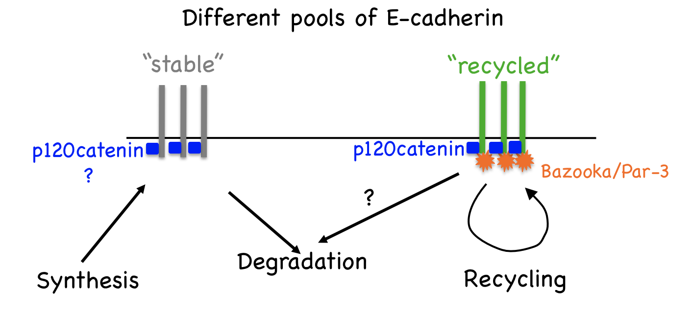

Our Research
The mechanism that attaches neighbouring cells in our body to each other is known as cell-cell adhesion. Recent work has demonstrated that cell-cell adhesion is also important for communication between the neighbouring cells to decide when to divide, migrate or die.
Our lab is interested to understand how cell-cell adhesion contributes to normal development of a whole organism. We focus on E-cadherin, a transmembrane protein that provides cell-cell adhesion between the epithelial cells. Using a combination of genetic assays, biochemistry and quantitative imaging techniques in Drosophila model system we study how E-cadherin functions in various developmental processes, for example cell neighbour exchange and tissue growth, and how it is regulated during development. In future, we aim to apply this knowledge about normal function of E-cadherin to treatment of medical conditions arising from defects in E-cadherin function such as epithelia-derived tumours.
Projects
Regulation of E-cadherin traffickingOrganisation of microtubule cytoskeleton in epithelia
Roles of E-cadherin in morphogenesis
Regulation of E-cadherin trafficking
The amount of E-cadherin at the cell surface and hence, its availability for adhesion and interaction with signalling pathways, is critical for normal development and homeostasis. The amount of E-cadherin at the cell surface is determined by a balance between internalisation and degradation, which remove E-cadherin from the plasma membrane, and biosynthesis and recycling, which conversely increase E-cadherin. In both mammalian and fly cells, E-cadherin is constantly endocytosed and then recycled in Rab11-positive recycling endosomes.
In Drosophila epithelial cells, there are two pools of E-cadherin: stable and recycled [PubMed]. The recycled E-cadherin is specifically associated with the protein Bazooka/Par-3 [PubMed], and requires the protein p120catenin for internalisation from cell surface [PubMed] as shown on the diagram below.
The projects in the lab address various aspects of E-cadherin recycling, including:
- How does p120catenin promote internalisation of E-cadherin from the plasma membrane?
- How is the decision between recycling or degrading internalised E-cadherin is made?
- How is E-cadherin is then re-delivered to the cell surface on microtubules?
Organisation of microtubule cytoskeleton in epithelia
Delivery of cellular components along the microtubule cytoskeleton is vital for correct cellular, and therefore organism function. The microtubule transport network is highly dynamic. It self-organises to adapt to the shape and demands of a cell: individual microtubules constantly grow or collapse. However, we found that in Drosophila epithelial cells, microtubule organisation is driven by cell geometry alone: microtubules are aligned with the cell’s long axis in elongated epithelial cells in Drosophila embryos as shown on the figure below; this alignment correlates with cell elongation, and microtubules become disordered when cell elongation is inhibited [PubMed].
We aim to understand how the dynamic microtubule network and stochastic transport along it result in a robust outcome with a statistically reproducible localisation of cell components in biologically relevant positions. The current projects in the lab include:
- Which microtubule properties ensure the correct response by microtubule network to cell geometry?
- How do tubulin posttranslational modifications affect the organisation of microtubule network and transport on it?
- How is E-cadherin transported on microtubule network to achieve a robust asymmetric localisation in the Drosophila epidermis?
Roles of E-cadherin in morphogenesis
In addition to providing a physical link between cells, there is growing evidence that cell-cell adhesion also contributes to communication between cells by facilitating various signalling events, thereby modulating cell proliferation, differentiation and apoptosis. We aim to elucidate how E-cadherin contributes to morphogenesis of an organism. In particular, we investigate:
- How is E-cadherin recycling coupled to signalling pathways?
- How do cells sense amounts of E-cadherin expressed to alter their proliferation and movement?
Funding:

last updated 12/06/2018 School of Biosciences |


 |